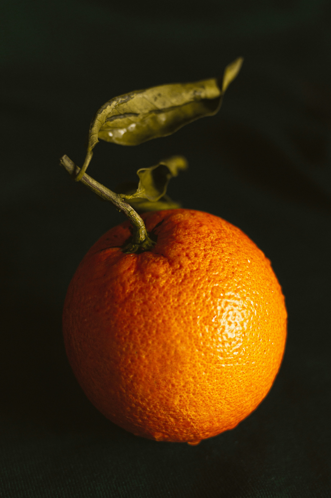

أناناس
له لب متماسك وعصير لذيذ. يتم تقشيره وتقطيعه إلى شرائح أو مكعبات قبل تناوله. يمكن أيضًا إضافته إلى السلطات والعصائر

كرز
ثمرة لذيذة. يمكن تناوله مباشرة من الشجرة أو إضافته إلى السلطات والحلويات

يوسفي
ثمرة عصيرية ولذيذة يتم تقشيرها والأغشية قبل تناولها.

فريز
ثمرة صغيرة ولذيذة يتم تناولها بالكامل. يمكن أكلها مباشرة أو إضافتها إلى الحلويات والسلطات